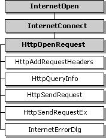

WinINet enables you to access resources on the World Wide Web (WWW). These resources can be accessed directly by using InternetOpenUrl (for more information, see Accessing URLs Directly).
Resources on the WWW are accessed by using http. The HTTP functions handle the underlying protocols, while allowing your application to access information on the WWW. As the HTTP protocol evolves, the underlying protocols are updated to maintain function behavior.
The following diagram shows the relationships of the functions that are used with the HTTP protocol. The shaded boxes represent functions that return HINTERNET handles, while the plain boxes represent functions that use the HINTERNET handle created by the function on which they depend.

For more information, see HINTERNET Handles.
The following functions are used during HTTP sessions to access the WWW.
| Function | Description |
|---|---|
| HttpAddRequestHeaders | Adds HTTP request headers to the HTTP request handle. This function requires a handle created by HttpOpenRequest. |
| HttpOpenRequest | Opens an HTTP request handle. This function requires a handle created by InternetConnect. |
| HttpQueryInfo | Queries information about an HTTP request. This function requires a handle created by the HttpOpenRequest or InternetOpenUrl function. |
| HttpSendRequest | Sends the specified HTTP request to the HTTP server. This function requires a handle created by HttpOpenRequest. |
| InternetErrorDlg | Displays predefined dialog boxes for common Internet error conditions. This function requires the handle used in the call to HttpSendRequest. |
Â
To start a connection to the WWW, the application must call the InternetConnect function on the root HINTERNET returned by InternetOpen. InternetConnect must establish an HTTP session by declaring the INTERNET_SERVICE_HTTP service type. For more information on using InternetConnect, see Using InternetConnect.
The HttpOpenRequest function opens an HTTP request and returns an HINTERNET handle that can be used by the other HTTP functions. Unlike the other open functions (such as FtpOpenFile and InternetOpenUrl), HttpOpenRequest does not send the request to the Internet when called. The HttpSendRequest function sends the request and establishes a connection over the network.
HttpOpenRequest takes an HTTP session handle created by InternetConnect and an HTTP verb, object name, version string, referrer, accept types, flags, and context value.
The HTTP verb is a string to be used in the request. Common HTTP verbs used in requests include GET, PUT, and POST. If this value is set to NULL, HttpOpenRequest uses the default value GET.
The object name is a string that contains the name of the specified HTTP verb's target object. This is generally a file name, an executable module, or a search specifier. If the object name supplied is an empty string, HttpOpenRequest looks for the default page.
The version string should contain the HTTP version. If this parameter is NULL, the function uses ""HTTP/1.1"".
The referrer specifies the address of the document from which the object name was obtained. If this parameter is NULL, no referrer is specified.
The null-terminated string that contains the accept types indicates the content types accepted by the application. Setting this parameter to NULL indicates that no content types are accepted by the application. If an empty string is supplied, the application indicates it accepts only documents of type ""text/*"". The value ""text/*"" indicates text-only documents—not pictures or other binary files.
The flag values control caching, cookies, and security issues. For Microsoft Network (MSN), NTLM, and other types of authentication, set the INTERNET_FLAG_KEEP_CONNECTION flag.
If the INTERNET_FLAG_ASYNC flag was set in the call to InternetOpen, a nonzero context value should be set for proper asynchronous operation.
The following example is a sample call to HttpOpenRequest.
hHttpRequest = HttpOpenRequest( hHttpSession, "GET", "", NULL, "", NULL, 0, 0);
The HttpAddRequestHeaders function enables applications to add one or more request headers to the initial request. This function allows an application to append additional free-format headers to the HTTP request handle; it is intended for use by sophisticated applications that require precise control over the request sent to the HTTP server.
HttpAddRequestHeaders needs an HTTP request handle created by HttpOpenRequest, a string that contains the headers, the length of the headers, and modifiers.
HttpSendRequest establishes a connection to the Internet and sends the request to the specified site. This function requires an HINTERNET handle created by HttpOpenRequest. HttpSendRequest can also send additional headers or optional information. The optional information is generally used for operations that write information to the server, such as PUT and POST.
After HttpSendRequest sends the request, the application can use the InternetReadFile, InternetQueryDataAvailable, and InternetSetFilePointer functions on the HINTERNET handle created by HttpOpenRequest to download the server's resources.
To post data to a server, the HTTP verb in the call to HttpOpenRequest must be either POST or PUT. The address of the buffer that contains the POST data should then be passed to the lpOptional parameter in HttpSendRequest. The dwOptionalLength parameter should be set to the size of the data.
You can also use the InternetWriteFile function to post data on an HINTERNET handle sent using HttpSendRequestEx.
HttpQueryInfo allows an application to retrieve information about an HTTP request. The function requires an HINTERNET handle created by HttpOpenRequest or InternetOpenUrl, an information level value, and a buffer length. HttpQueryInfo also accepts a buffer that stores the information and a zero-based header index that enumerates multiple headers with the same name.
After opening a request with HttpOpenRequest and sending it to the server with HttpSendRequest, the application can use the InternetReadFile, InternetQueryDataAvailable, and InternetSetFilePointer functions to download the resource from the HTTP server.
The following example downloads a resource. The function accepts the handle to the current window, the identification number of an edit box, and an HINTERNET handle created by HttpOpenRequest and sent by HttpSendRequest. It uses InternetQueryDataAvailable to determine the size of the resource and then downloads it using InternetReadFile. The contents are then displayed in the edit box.
int WINAPI Dumper(HWND hX, int intCtrlID, HINTERNET hResource)
{
LPTSTR lpszData; // buffer for the data
DWORD dwSize; // size of the data available
DWORD dwDownloaded; // size of the downloaded data
DWORD dwSizeSum=0; // size of the data in the textbox
LPTSTR lpszHolding; // buffer to merge the textbox data and buffer
// Set the cursor to an hourglass.
SetCursor(LoadCursor(NULL,IDC_WAIT));
// This loop handles reading the data.
do
{
// The call to InternetQueryDataAvailable determines the
// amount of data available to download.
if (!InternetQueryDataAvailable(hResource,&dwSize,0,0))
{
printf("InternetQueryDataAvailable failed (%d)\n", GetLastError());
SetCursor(LoadCursor(NULL,IDC_ARROW));
return FALSE;
}
else
{
// Allocate a buffer of the size returned by
// InternetQueryDataAvailable.
lpszData = new TCHAR[dwSize+1];
// Read the data from the HINTERNET handle.
if(!InternetReadFile(hResource,
(LPVOID)lpszData,
dwSize,
&dwDownloaded))
{
printf("InternetReadFile failed (%d)\n", GetLastError());
delete[] lpszData;
break;
}
else
{
// Add a null terminator to the end of the data buffer
lpszData[dwDownloaded]='\0';
// Allocate the holding buffer.
lpszHolding = new TCHAR[dwSizeSum + dwDownloaded + 1];
// Check if there has been any data written
// to the textbox.
if (dwSizeSum != 0)
{
// Retrieve the data stored in the textbox if any
GetDlgItemText(hX,intCtrlID,
(LPTSTR)lpszHolding,
dwSizeSum);
// Add a null terminator at the end of the
// textbox data.
lpszHolding[dwSizeSum]='\0';
}
else
{
// Make the holding buffer an empty string.
lpszHolding[0]='\0';
}
size_t cchDest = dwSizeSum + dwDownloaded + dwDownloaded + 1;
LPTSTR* ppszDestEnd = 0;
size_t* pcchRemaining = 0;
// Add the new data to the holding buffer
HRESULT hr = StringCchCatEx(lpszHolding,
cchDest,
lpszData,
ppszDestEnd,
pcchRemaining,
STRSAFE_NO_TRUNCATION);
if(SUCCEEDED(hr))
{
// Write the holding buffer to the textbox.
SetDlgItemText(hX,intCtrlID,(LPTSTR)lpszHolding);
// Delete the two buffers.
delete[] lpszHolding;
delete[] lpszData;
// Add the size of the downloaded data to the
// textbox data size.
dwSizeSum = dwSizeSum + dwDownloaded + 1;
// Check the size of the remaining data.
// If it is zero, break.
if (dwDownloaded == 0)
break;
else
{
// TODO: Insert error handling code here.
}
}
}
}
}
while(TRUE);
// Close the HINTERNET handle.
InternetCloseHandle(hResource);
// Set the cursor back to an arrow.
SetCursor(LoadCursor(NULL,IDC_ARROW));
return TRUE;
}
[!Note]
WinINet does not support server implementations. In addition, it should not be used from a service. For server implementations or services use Microsoft Windows HTTP Services (WinHTTP).
Â
Â
Â